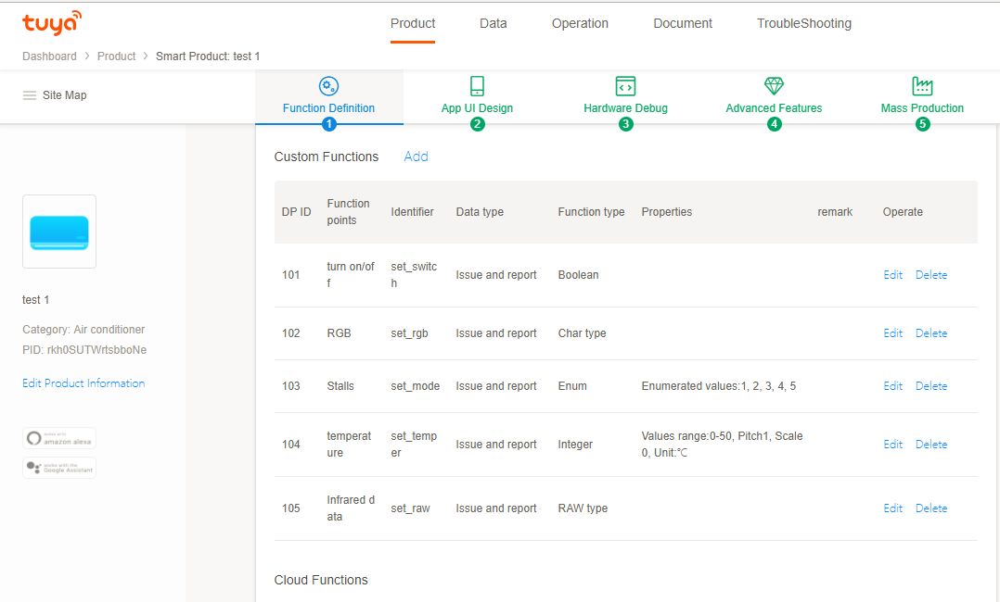

1. Device Management
Device management mainly provides device related operations, device control, device status change monitoring, device rename, device firmware upgrade, device remove, device restoration factory settings and other operations.
| Class | Description |
|---|---|
| TuyaSmartDevice | Device Management Class |
| TuyaSmartDeviceModel | Device Model Class |
TuyaSmartDeviceModel
| Field | Type | Description |
|---|---|---|
| devId | NSString | Device Id |
| name | NSString | Device Name |
| iconUrl | NSString | Device Icon URL |
| isOnline | BOOL | Device Online Status. Include Wi-Fi、WLAN、Bluetooth. As long as any of them is YES, the value is YES. |
| isCloudOnline | BOOL | Device Wi-Fi Online Status |
| isLocalOnline | BOOL | Device WLAN Online Status |
| isShare | BOOL | Is Shared Device |
| dps | NSDictionary | Dps |
| dpCodes | NSDictionary | Dp Code |
| schemaArray | NSArray | Data Point Detail |
| productId | NSString | Product Id |
| capability | NSUInteger | Capability |
| deviceType | TuyaSmartDeviceModelType | Device Type |
| supportGroup | BOOL | Is Support Group |
| gwType | NSString | "v" Means Virtual Device |
| pv | NSString | Protocol Version |
| lpv | NSString | WLAN Protocol Version |
| latitude | NSString | latitude |
| longitude | NSString | longitude |
| localKey | NSString | A Key Used For Device Communication |
| uuid | NSString | Device uuid |
| homeId | long long | Home Id For Device |
| roomId | long long | Room Id For Device |
| upgrading | BOOL | Is Upgrading |
| timezoneId | NSString | Device Timezone Id |
| nodeId | NSString | Device Short Address |
| parentId | NSString | Parent Device Id |
| isMeshBleOnline | BOOL | Device Bluetooth Mesh Online Status |
| devKey | NSString | A Key Used For Standard SIG Mesh Device Communication |
| standard | BOOL | Is a Standardized Device |
| standSchemaModel | TuyaSmartStandSchemaModel | Standardized Data Point Detail |
| activeTime | NSTimeInterval | Active Time |
| sharedTime | long long | Shared Time |
1.1. Initialize Device
Note: you need to initialize a home instance through TuyaSmartHome, then call the interface getHomeDetailWithSuccess:failure: get the details of the home. After synchronizing the details of the home, the device can be initialized successfully.
The wrong deviceId may cause initialization failure. Then, the instance of the device returns nil
Declaration
Initialize the device class according to the deviceId.
/**
* Get TuyaSmartDevice instance. If current user don't have this device, a nil will be return.
* 获取设备实例。如果当前用户没有该设备，将会返回nil。
*
* @param devId Device ID
* @return instance
*/
+ (nullable instancetype)deviceWithDeviceId:(NSString *)devId;
Parameters
| Parameter | Description |
|---|---|
| devId | devId |
Example
Objc:
TuyaSmartDevice *device = [TuyaSmartDevice deviceWithDeviceId:devId];
device.delegate = self;
Swift:
let device = TuyaSmartDevice(deviceId: devId)
device.delegate = self
1.2. Delegate of Device
After the TuyaSmartDeviceDelegate delegate protocol is realized, user can update the UI of the App device control in the callback of device status change.
Example
Objc:
- (void)initDevice {
self.device = [TuyaSmartDevice deviceWithDeviceId:@"your_device_id"];
self.device.delegate = self;
}
#pragma mark - TuyaSmartDeviceDelegate
- (void)device:(TuyaSmartDevice *)device dpsUpdate:(NSDictionary *)dps {
// DPS status of the device changes, refresh the UI
}
- (void)deviceInfoUpdate:(TuyaSmartDevice *)device {
// Device information updates such as device name modification, device online and offline status, etc
}
- (void)deviceRemoved:(TuyaSmartDevice *)device {
// Device removed
}
- (void)device:(TuyaSmartDevice *)device signal:(NSString *)signal {
// Wifi signal
}
- (void)device:(TuyaSmartDevice *)device firmwareUpgradeProgress:(NSInteger)type progress:(double)progress {
// Firmware upgrade progress
}
- (void)device:(TuyaSmartDevice *)device firmwareUpgradeStatusModel:(TuyaSmartFirmwareUpgradeStatusModel *)upgradeStatusModel {
// Callback of device upgrade status
}
Swift:
func initDevice() {
device = TuyaSmartDevice(deviceId: "your_device_id")
device?.delegate = self
}
// MARK: - TuyaSmartDeviceDelegate
func device(_ device: TuyaSmartDevice?, dpsUpdate dps: [AnyHashable : Any]?) {
// DPS status of the device changes, refresh the UI
}
func deviceInfoUpdate(_ device: TuyaSmartDevice?) {
// Device information updates such as device name modification, device online and offline status, etc
}
func deviceRemoved(_ device: TuyaSmartDevice?) {
// Device removed
}
func device(_ device: TuyaSmartDevice?, signal: String?) {
// Wifi signal
}
func device(_ device: TuyaSmartDevice?, firmwareUpgradeProgress type: Int, progress: Double) {
// Firmware upgrade progress
}
func device(_ device: TuyaSmartDevice?, firmwareUpgradeStatusModel upgradeStatusModel: TuyaSmartFirmwareUpgradeStatusModel?) {
// Callback of device upgrade status
}
1.3. Device Control
Device control supports three kinds of channel control, LAN control, cloud control, and automatic mode (if LAN is online, first go LAN control, LAN is not online, go cloud control)
LAN Control
[self.device publishDps:dps mode:TYDevicePublishModeLocal success:^{
NSLog(@"publishDps success");
} failure:^(NSError *error) {
NSLog(@"publishDps failure: %@", error);
}];
Cloud Control
[self.device publishDps:dps mode:TYDevicePublishModeInternet success:^{
NSLog(@"publishDps success");
} failure:^(NSError *error) {
NSLog(@"publishDps failure: %@", error);
}];
Auto Mode
[self.device publishDps:dps mode:TYDevicePublishModeAuto success:^{
NSLog(@"publishDps success");
} failure:^(NSError *error) {
NSLog(@"publishDps failure: %@", error);
}];
1.4. Functions of Device
The dps (NSDictionary type) attribute of the TuyaSmartDeviceModel class defines the state of the device, and the state is called data point (DP) or function point.
Each key in the dps dictionary refers to a dpId of a function point, and Value refers to the dpValue of a function point. The dpValue is the value of the function point.
Refer to the functions of product in the Tuya developer platform for definition of function points of products. See the following figure.

The control instructions shall be sent in the format given below:
{"<dpId>":"<dpValue>"}
According to the definition of function points of the product in the back end, the example codes are as follows.
Example
Objc:
- (void)publishDps {
// self.device = [TuyaSmartDevice deviceWithDeviceId:@"your_device_id"];
NSDictionary *dps;
// Set bool dp value to true
dps = @{@"1": @(YES)};
// Set string dp value to "ff5500"
dps = @{@"4": @"ff5500"};
// Set enum dp value to "Medium"
dps = @{@"5": @"Medium"};
// Set number dp value to 20
dps = @{@"6": @(20)};
// Set byte dp value to "1122"
dps = @{@"15": @"1122"};
// Send multiple dp values together
dps = @{@"1": @(YES), @"4": @"ff5500"};
[self.device publishDps:dps success:^{
NSLog(@"publishDps success");
// Publish dp success. device state change will be reported from deviceDpsUpdate delegate callback.
} failure:^(NSError *error) {
NSLog(@"publishDps failure: %@", error);
}];
}
Swift:
func publishDps() {
var dps = [String : Any]()
// dps: Please refers to the specific product definition
device?.publishDps(dps, success: {
print("publishDps success")
// Publish dp success. device state change will be reported from deviceDpsUpdate delegate callback.
}, failure: { (error) in
if let e = error {
print("publishDps failure: \(e)")
}
})
}
Note:
- Special attention shall be paid to the type of data in sending the control commands. For example, the data type of function points shall be value, and the
@{@"2": @(25)}instead of@{@"2": @"25"}shall be sent for the control command. - In the transparent transmission, the byte string shall be the string format, and all letters shall be in the lower case, and the string must have even bits. The correct format shall be:
@{@"1": @"011f"}instead of@{@"1": @"11f"}
For more concepts of function points, please refer to the QuickStart-Related Concepts of Function Points
1.5. Querying Device Information
Declaration
Query single dp data.
Query the latest data of the dp from the device; those data will be called back via the - (void)device:(TuyaSmartDevice *)device dpsUpdate:(NSDictionary *)dps delegate.
Example
Objc:
- (void)queryDP {
// self.device = [TuyaSmartDevice deviceWithDeviceId:@"your_device_id"];
// query dp = "1"
[self.device publishDps:@{@"1":null} mode:TYDevicePublishModeAuto success:^{
NSLog(@"query dp success");
} failure:^(NSError *error) {
NSLog(@"query dp failure: %@", error);
}];
}
Swift:
func queryDP() {
// self.device = [TuyaSmartDevice deviceWithDeviceId:@"your_device_id"];
// query dp = "1"
device.publishDps([
"1": null
], mode: TYDevicePublishModeAuto, success: {
print("query dp success")
}, failure: { error in
if let error = error {
print("query dp failure: \(error)")
}
})
}
Notes
- This interface is mainly for the dp points where the data will not be reported automatically. The dp data values for regular query can be obtained through TuyaSmartDeviceModel.dps.
1.6. Modify the Device Name
Declaration
- (void)updateName:(NSString *)name success:(nullable TYSuccessHandler)success failure:(nullable TYFailureError)failure;
Parameters
| Parameter | Description |
|---|---|
| name | New device name |
| success | Success block |
| failure | Failure block |
Example
Objc:
- (void)modifyDeviceName:(NSString *)mame {
// self.device = [TuyaSmartDevice deviceWithDeviceId:@"your_device_id"];
[self.device updateName:name success:^{
NSLog(@"updateName success");
} failure:^(NSError *error) {
NSLog(@"updateName failure: %@", error);
}];
}
Swift:
func modifyDeviceName(_ name: String) {
device?.updateName(name, success: {
print("updateName success")
}, failure: { (error) in
if let e = error {
print("updateName failure: \(e)")
}
})
}
1.7. Remove Device
After a device is removed, it will be in the to-be-network-configured status (smart config mode).
Declaration
- (void)remove:(nullable TYSuccessHandler)success failure:(nullable TYFailureError)failure;
Parameters
| Parameter | Description |
|---|---|
| success | Success block |
| failure | Failure block |
Example
Objc:
- (void)removeDevice {
// self.device = [TuyaSmartDevice deviceWithDeviceId:@"your_device_id"];
[self.device remove:^{
NSLog(@"remove success");
} failure:^(NSError *error) {
NSLog(@"remove failure: %@", error);
}];
}
Swift:
func removeDevice() {
device?.remove({
print("remove success")
}, failure: { (error) in
if let e = error {
print("remove failure: \(e)")
}
})
}
1.8. Restore Factory Settings
After the device is restored to the factory settings, it will re-enter the network to be distributed state (smart config mode), and the relevant data of the device will be cleared.
Declaration
- (void)resetFactory:(nullable TYSuccessHandler)success failure:(nullable TYFailureError)failure;
Parameters
| Parameter | Description |
|---|---|
| success | Success block |
| failure | Failure block |
Example
Objc:
- (void)removeDevice {
// self.device = [TuyaSmartDevice deviceWithDeviceId:@"your_device_id"];
[self.device resetFactory:^{
NSLog(@"reset success");
} failure:^(NSError *error) {
NSLog(@"reset failure: %@", error);
}];
}
Swift:
func removeDevice() {
device?.resetFactory({
print("reset success")
}, failure: { (error) in
if let e = error {
print("reset failure: \(e)")
}
})
}
1.9. Obtain Wi-Fi Signal Strength
Declaration
After calling Get Device Wi-Fi Signal, TuyaSmartDeviceDelegate device:signal: will be called
- (void)getWifiSignalStrengthWithSuccess:(nullable TYSuccessHandler)success failure:(nullable TYFailureError)failure;
Parameters
| Parameter | Description |
|---|---|
| success | Send success block |
| failure | Failure block |
Example
Objc:
- (void)getWifiSignalStrength {
// self.device = [TuyaSmartDevice deviceWithDeviceId:@"your_device_id"];
// self.device.delegate = self;
[self.device getWifiSignalStrengthWithSuccess:^{
NSLog(@"get wifi signal strength success");
} failure:^(NSError *error) {
NSLog(@"get wifi signal strength failure: %@", error);
}];
}
#pragma mark - TuyaSmartDeviceDelegate
- (void)device:(TuyaSmartDevice *)device signal:(NSString *)signal {
NSLog(@" signal : %@", signal);
}
Swift:
func getWifiSignalStrength() {
self.device?.getWifiSignalStrength(success: {
print("get wifi signal strength success")
}, failure: { (error) in
if let e = error {
print("get wifi signal strength failure: \(e)")
}
})
}
// MARK: - TuyaSmartDeviceDelegate
func device(_ device: TuyaSmartDevice!, signal: String!) {
}
1.10. Obtain the Sub-Device List of a Gateway
Declaration
- (void)getSubDeviceListFromCloudWithSuccess:(nullable void (^)(NSArray <TuyaSmartDeviceModel *> *subDeviceList))success failure:(nullable TYFailureError)failure;
Parameters
| Parameter | Description |
|---|---|
| success | Success block |
| failure | Failure block |
Example
Objc:
- (void)getSubDeviceList {
// self.device = [TuyaSmartDevice deviceWithDeviceId:@"your_device_id"];
[self.device getSubDeviceListFromCloudWithSuccess:^(NSArray<TuyaSmartDeviceModel *> *subDeviceList) {
NSLog(@"get sub device list success");
} failure:^(NSError *error) {
NSLog(@"get sub device list failure: %@", error);
}];
}
Swift:
func getSubDeviceList() {
device?.getSubDeviceListFromCloud(success: { (subDeviceList) in
print("get sub device list success")
}, failure: { (error) in
if let e = error {
print("get sub device list failure: \(e)")
}
})
}
1.11. Firmware Upgrade
Firmware upgrade process:
Obtain device upgrade information -> send module upgrade instructions -> module upgrade succeeds -> send upgrade instructions to the device control module -> the upgrade of device control module succeeds
User obtain device upgrade information interface to get TuyaSmartFirmwareUpgradeModel, you can get firmware type from type property, get type description from typeDesc property.
1.11.1. Obtain Device Upgrade Information
Declaration
- (void)getFirmwareUpgradeInfo:(nullable void (^)(NSArray <TuyaSmartFirmwareUpgradeModel *> *upgradeModelList))success failure:(nullable TYFailureError)failure;
Parameters
| Parameter | Description |
|---|---|
| success | Success block |
| failure | Failure block |
TuyaSmartFirmwareUpgradeModel Description
| Field | Type | Description |
|---|---|---|
| desc | NSString | Upgrade title |
| typeDesc | NSString | Device type upgrade content |
| upgradeStatus | NSInteger | 0:No upgrade 1:Has new version 2:Upgrading 5:Waiting for wake up |
| version | NSString | Firmware version |
| upgradeType | NSInteger | 0:App Remind upgrade 2:app force upgrade 3:check upgrade |
| url | NSString | URL for firmware |
| fileSize | NSString | Firmware size |
| md5 | NSString | MD5 for Firmware |
| upgradingDesc | NSString | The content when upgrading |
Example
Objc:
- (void)getFirmwareUpgradeInfo {
// self.device = [TuyaSmartDevice deviceWithDeviceId:@"your_device_id"];
[self.device getFirmwareUpgradeInfo:^(NSArray<TuyaSmartFirmwareUpgradeModel *> *upgradeModelList) {
NSLog(@"getFirmwareUpgradeInfo success");
} failure:^(NSError *error) {
NSLog(@"getFirmwareUpgradeInfo failure: %@", error);
}];
}
Swift:
func getFirmwareUpgradeInfo() {
device?.getFirmwareUpgradeInfo({ (upgradeModelList) in
print("getFirmwareUpgradeInfo success")
}, failure: { (error) in
if let e = error {
print("getFirmwareUpgradeInfo failure: \(e)")
}
})
}
1.11.2. Start Upgrade
Declaration
- (void)upgradeFirmware:(NSInteger)type success:(nullable TYSuccessHandler)success failure:(nullable TYFailureError)failure;
Parameters
| Parameter | Description |
|---|---|
| type | type: The type to be upgraded is obtained from the device upgrade information interface getFirmwareUpgradeInfo |
| success | Success block |
| failure | Failure block |
Example
Objc:
- (void)upgradeFirmware {
// self.device = [TuyaSmartDevice deviceWithDeviceId:@"your_device_id"];
// type: get firmware type from getFirmwareUpgradeInfo interface
// TuyaSmartFirmwareUpgradeModel - type
[self.device upgradeFirmware:type success:^{
NSLog(@"upgradeFirmware success");
} failure:^(NSError *error) {
NSLog(@"upgradeFirmware failure: %@", error);
}];
}
Swift:
func upgradeFirmware() {
// type: get firmware type from getFirmwareUpgradeInfo interface
// TuyaSmartFirmwareUpgradeModel - type
device?.upgradeFirmware(type, success: {
print("upgradeFirmware success")
}, failure: { (error) in
if let e = error {
print("upgradeFirmware failure: \(e)")
}
})
}
1.11.3. Callback Interface
Example
Objc:
- (void)deviceFirmwareUpgradeSuccess:(TuyaSmartDevice *)device type:(NSInteger)type {
// firmware upgrade success
}
- (void)deviceFirmwareUpgradeFailure:(TuyaSmartDevice *)device type:(NSInteger)type {
// firmware upgrade failure
}
- (void)device:(TuyaSmartDevice *)device firmwareUpgradeProgress:(NSInteger)type progress:(double)progress {
// firmware upgrade progress
}
Swift:
func deviceFirmwareUpgradeSuccess(_ device: TuyaSmartDevice!, type: Int) {
// firmware upgrade success
}
func deviceFirmwareUpgradeFailure(_ device: TuyaSmartDevice!, type: Int) {
// firmware upgrade failure
}
func device(_ device: TuyaSmartDevice!, firmwareUpgradeProgress type: Int, progress: Double) {
// firmware upgrade progress
}
1.12. Fetch the Log of DP Report
Fetch the recent log of the DP report. It is only available for the result of 7 days, if you need more days' results, please refer to the common interface.
Description
| Name | Version | Description |
|---|---|---|
| tuya.m.smart.operate.all.log | 1.0 | Fetch the log of DP report |
Parameters
| Name | Type | Description | Is Required? |
|---|---|---|---|
| devId | String | Device ID | true |
| dpIds | String | The DP id for querying, splitted by comma. For example: @“1，2” |
true |
| offset | Integer | The offset of pagination | true |
| limit | Integer | The number of fetched data per page | true |
| startTime | String | The start time for the query (unit in milliseconds) | false |
| endTime | String | The end time for the query (unit in milliseconds) | false |
| sortType | String | The order of sorted results, sorted by time. (ASC or DESC, Default is DESC) |
false |
Request Example
{
"devId" : "05200020b4e62d16ce8b",
"dpIds" : "1,2",
"offset" : 0,
"limit" : 10,
"startTime" : "1542800401000",
"endTime" : "1542886801000",
"sortType" : "DESC"
}
Response Example
{
"result" : {
"total" : 11055,
"dps" : [ {
"timeStamp" : 1542829972,
"dpId" : 5,
"timeStr" : "2018-11-21 20:52:52",
"value" : "311"
}, {
"timeStamp" : 1542829970,
"dpId" : 5,
"timeStr" : "2018-11-21 20:52:50",
"value" : "323"
}, {
"timeStamp" : 1542829966,
"dpId" : 5,
"timeStr" : "2018-11-21 20:52:46",
"value" : "230"
}, {
"timeStamp" : 1542829964,
"dpId" : 5,
"timeStr" : "2018-11-21 20:52:44",
"value" : "231"
}, {
"timeStamp" : 1542829960,
"dpId" : 5,
"timeStr" : "2018-11-21 20:52:40",
"value" : "307"
}, {
"timeStamp" : 1542829958,
"dpId" : 5,
"timeStr" : "2018-11-21 20:52:38",
"value" : "320"
}, {
"timeStamp" : 1542829954,
"dpId" : 5,
"timeStr" : "2018-11-21 20:52:34",
"value" : "229"
}, {
"timeStamp" : 1542829950,
"dpId" : 5,
"timeStr" : "2018-11-21 20:52:30",
"value" : "325"
}, {
"timeStamp" : 1542829948,
"dpId" : 5,
"timeStr" : "2018-11-21 20:52:28",
"value" : "292"
}, {
"timeStamp" : 1542829942,
"dpId" : 5,
"timeStr" : "2018-11-21 20:52:22",
"value" : "231"
} ],
"hasNext" : true
},
"t" : 1542959314632,
"success" : true,
"status" : "ok"
}
Example
Objc:
- (void)getOperationLogList {
[[TuyaSmartRequest new] requestWithApiName:@"tuya.m.smart.operate.all.log" postData:@{@"devId":@"", @"dpIds", @"1", @"offset":@(0), @"limit":@(10)} version:@"1.0" success:^(id result) {
} failure:^(NSError *error) {
}];
}
Swift:
func getOperationLogList() {
TuyaSmartRequest().init(apiName: "tuya.m.smart.operate.all.log", postData: [:], version: "1.0", success: { result in
}, failure: { error in
})
}